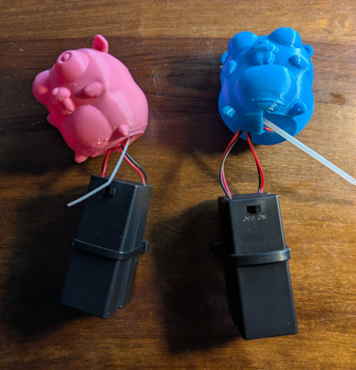
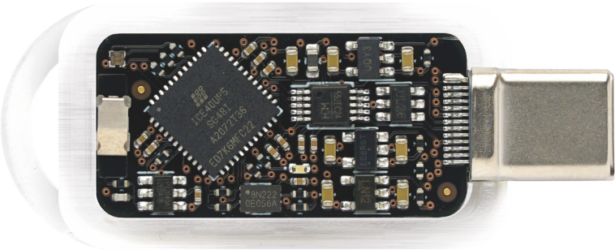

A Small Update On TinyGo
GopherCon 2025 Edition
Ron Evans - @deadprogram
Ron Evans (@deadprogram)
Technologist For Hire
Technologist For Hire
hybridgroup.com
Software that makes your hardware work
tinygo.org
Go compiler for small places
Current stats
16k+ stars
980+ forks
250+ contributors
Over 125 different boards supported
Over 120 different sensors/displays/wireless devices/actuators supported
TinyGo Release 0.39 Highlights
Go 1.25 support
Multicore on RP2350 Microcontroller
Many more stdlib packages can compile
Weighing In
Binary sizes for "Big Go" (1.25.0) and TinyGo (0.39)
package main
func main() {
println("Hello world!")
}
hello.go
1069240 ago 19 19:44 hello-biggo-1.25
14488 ago 19 19:41 hello-tinygo-0.39
73x smaller
package main
import (
"fmt"
"os"
)
func main() {
fmt.Println("Hello world!")
helloWorldAsBytes := []byte("Hello world!\n")
err := os.WriteFile("./helloworld.txt", helloWorldAsBytes, 0644)
if err != nil {
panic(err)
}
}
hello-wasi.go
wasmbyexample.dev
2555354 ago 19 19:48 hello-wasi-biggo-1.25
80127 ago 19 19:49 hello-wasi-tinygo-0.39
31x smaller
TinyBench
github.com/tinygo-org/tinybench
Zig - Rust - Go - TinyGo - GCC - Clang
Latest benchmarks
TinyGo Tour
tinygo.org/tour/pwm
"Learn Go With Pocket Sized Projects"
Aliénor Latour, Donia Chaiehloud, Pascal Bertrand
TinyGo-Keebook 2025
tinygo-keeb.org/en/books/index.html
TinyGo Conference 2025 - Japan
Akihabara (Tokyo) - Oct. 12, 2025
conf.tinygo-keeb.org/2025
Webassembly
wasm, wasi, and wasm-unknown
Welcome, Big Go!
WASI Preview 1
Wassette
github.com/microsoft/wassette
Firefly Zero
Game console running WebAssembly
fireflyzero.com
wasmVision
wasmvision.com
"Making Games in Go: 3 Months Without LLMs vs 3 Days With LLMs!"
marianogappa.github.io/software/2025/08/24/i-made-two-card-games-in-go
Back To The Hardware

Golang on the PlayStation 2 - Parts 1/2
rgsilva.com/blog/ps2-go-part-1
hackaday.com/2025/03/31/golang-on-the-ps2

go-haystack
Build your own AirTags
github.com/hybridgroup/go-haystack
